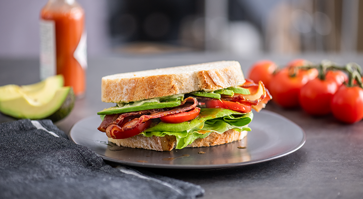

Guacamole
Origin: Mexican Source: My Recipe Category: Appetizer
Guacamole is a Mexican dip made from mashed avocados, tomatoes, onions, cilantro, lime juice, and chili pepper, creating a creamy, zesty, and versatile condiment often enjoyed with tortilla chips, tacos, and more.
Recipe Ingredients
- Avocado
- Lime
- Salt
- Onion
- Tomato
- Cilantro
Recipe Steps
- Slice three ripe avocados in half.
- Scoop them into a mixing bowl.
- Use a fork to gently mash them.
- Add the onions, tomatoes, cilantro, jalapeno pepper, garlic, lime juice and salt and stir everything together.
Additional Food images


BLAT Sandwich
Origin: American Source: My Recipe Category: Main A BLAT sandwich is a delicious twist on the classic BLT, featuring crispy bacon, fresh lettuce, ripe tomatoes, and creamy avocado, all sandwiched between slices of bread for a satisfying blend of flavors and textures.
Recipe Ingredients
- Avocado
- Bacon
- Lettuce
- Tomato
- Bread
- Mayo
Recipe Steps
- Toasted bread slice spread with mayo.
- Put sliced avocado, bacons, sliced tomatoes, lettuce on one spread of bread.
- Put the other slice of bread at the top.
Additional Food images


Double Chocolate Cookies
Origin: Michigan Source: Family Recipe Category: Dessert
My daughter learned to make these cookies at a baking camp at Zingermanns and has tweaked the recipe to fit the taste buds of her siblings. They are extremely sugary so the salt helps to balance it. Note, these cookies are best eaten very quickly.
Recipe Ingredients
- Unsalted butter
- Granulated Sugar
- Packed light or dark brown sugar
- Large egg
- Pure vanilla extract
- Semi-sweet chocolate chunks (melted)
- All-purpose flour
- Natural unsweetened cocoa powder
- Baking soda
- Salt
- Semi-sweet chocolate chunks
Recipe Steps
- In a mixing bowl cream together the butter, granulated sugar, and brown sugar
- Add the egg and vanilla extract and beat well
- Add the melted chocolate
- In a separate bowl combine the flour, baking soda, cocoa powder and salt
- Combine the wet and dry ingredients
- Add the unmelted chocolate chunks.
- Form 15 cookies and place on a baking sheet.
- Cook for 12 to 13 minutes at 350 degrees.
Additional Food images